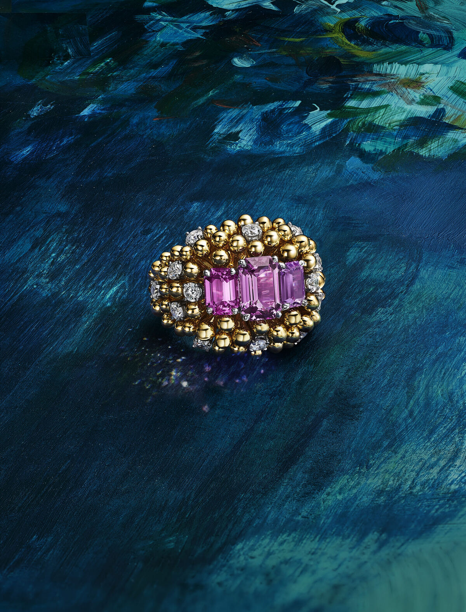

Nathalie Verdeille has spent time in the Tiffany archive and the 2026 Blue Book is what came of it. Hidden Garden is a spring chapter of high jewellery that asks you to slow down long enough to see it.
The Blue Book is the oldest continuous editorial gesture at Tiffany. It first appeared in 1845 as a mail-order catalogue sent to well-heeled American households with leisure for jewels, and the format persisted, in one form or another, ever since. A twentieth-century redesign turned it into the annual high jewellery platform of the house, released in two chapters a year and anchored to the Landmark, the redone flagship on Fifth and 57th that reopened in 2023. Hidden Garden is the spring chapter for 2026.
Nathalie Verdeille, Senior Vice President and Chief Artistic Officer, signed the collection in collaboration with the in-house Design Studio. Verdeille came to Tiffany from Cartier, where she spent years on the high jewellery workshop floor. That pedigree matters. High jewellery is a craft that lives in the hands of a few workshops, and the designers who know how to speak to those hands tend to come from a specific European tradition. Verdeille is one of them.
Looking closer
Hidden Garden's concept is a botanist's conceit about noticing. Flora and fauna do most of their work, Verdeille argues, in transformations we tend to miss: a petal unfurling, a leaf curling toward the light, an insect settling on a stem. The pieces are built around those small movements, and the craftsmanship rewards you for standing closer to the vitrine than is strictly polite.
The metals do a quiet share of the work. Gold vines twist along slim platinum leaves. Enamel passes from one field of colour into another. Settings lean toward the invisible, in the French manner, so that stones appear to float on a ribbon of light. Set against what a lot of luxury houses have done with high jewellery in the last five years, which has favoured loud, graphic, feed-ready statement pieces, Hidden Garden pulls decidedly in the other direction.
The Butterfly
The Butterfly is the clearest illustration of the method. Its wings alternate padparadscha sapphires, the pink-orange variety from Sri Lanka and Madagascar, with Montana sapphires in a denim-blue that feels closer to sky than to sea. The stones are set in a pavé so tight that the wings appear dusted with pigment. Anyone who has held a real butterfly will recognise the effect: the way a wing shifts through light depending on the angle of its owner, colour moving across a surface that is almost too thin to carry it.
Padparadschas are difficult stones. They have the faintest pinkish-orange signature, and gem houses grade them on a narrow chromatic corridor. Montana sapphires carry a similar problem in a different colour family, which is why most jewellers avoid them in favour of the more reliable Ceylon blues. Verdeille's team has matched the two across a single brooch, which is the sort of feat that gets noticed only by those who know what to look for.
The craftsmanship is deliberately understated. Look closer, and what was always there turns out to be more than enough.
The Splendid EditReading Schlumberger
The Parrot is a return to Jean Schlumberger, the Alsatian-born designer whose work defined the Tiffany high jewellery canon from the 1950s into the 1970s. Schlumberger's pieces are some of the strongest arguments in the Tiffany archive: biomorphic, painterly, full of wit. The new Parrot uses paillonné enamel, a technique in which coloured glass is fused to a metal foil to produce a depth of hue that flat enamel cannot reach, and each feather is finished by hand. The original Parrot sold through Tiffany in the 1960s. The 2026 version is recognisable as a cousin without being a replica.
Verdeille has been public about her method with Schlumberger. She studies the drawings rather than the finished objects. The drawings, she has argued, carry more information about intent than a completed piece can, because an object is already a set of compromises between idea and manufacture. Hidden Garden reads Schlumberger's drawings and moves around them. It is a commentary rather than a quotation.

Tiffany Blue Book 2026, Hidden Garden. Photography courtesy of Tiffany & Co. / CR Fashion Book
Bird on a Rock, again
The third signature piece is a new Bird on a Rock, the Schlumberger design that Americans know best because Elizabeth Taylor and Jackie Onassis both wore it. The 2026 iteration is set with a pair of Brazilian aquamarines that the house has clearly been hunting for some time. Their size is serious. Their saturation runs closer to Santa Maria than to the pale, watered blue that cheaper aquamarines tend to settle into.
The stones across the collection come from Brazil, Sri Lanka, Madagascar, and further afield, and the line reads like a map of the gem trade as it stands in 2026. Nothing in Hidden Garden is trying to argue a political position about sourcing. The sourcing is simply the sourcing, documented with the specificity that the house has always built into its Blue Book notes.
A case for looking, closer
The case for Hidden Garden is, quietly, a case against a particular kind of consumption. Most high jewellery in the age of the smartphone is photographed at an angle calibrated for the feed, with a single light, a single focal plane, and a piece of furniture behind it. Verdeille's Hidden Garden does not photograph easily. Its sapphires shift colour under camera flashes. Its enamel reads flatter than it is. Its gold vines are too fine to catch a phone lens without a macro attachment. These are pieces designed to be met in person.
That is perhaps the real argument of the collection. The Landmark is a building with plenty of vitrines. Hidden Garden is an invitation to stand in front of one and stay there. Tiffany has watched the attention economy and declined to participate in it on the usual terms. The Blue Book has always been, in its truest form, a document for readers who still know how to read slowly. For 2026, it remains that.